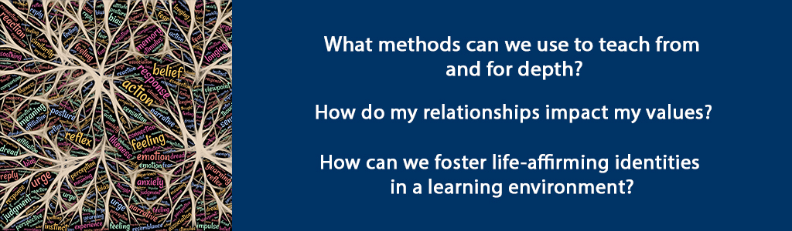

Overview
In this unit you will consider how to teach with depth. This is grounded in who you are – recall the first units of the course. Teaching with depth in the workplace or in an academic setting is founded on relationships and values. In this unit you will apply your reflections to an analysis of a company’s adult learning initiatives.
Unit 8 focuses on three guiding questions:
- What methods can we use to teach from and for depth?
- How do my relationships impact my values?
- How can we foster life-affirming identities in a learning environment?
Topics
- Adult Education Methods to Teach from Depth
- Web of Relationships and Impact on Values
Unit Learning Outcomes
When you have completed this unit, you should be able to:
- Analyze the effectiveness of training and employee development.
- Explain how to teach and lead for depth using discussion strategies and questions.
- Evaluate adult education methods considering impact on organizational culture.
- Articulate your personal web of relationship and impact on values.
Learning Activities
Here is a checklist of learning activities you will benefit from in completing this unit. You may find it helpful in planning your work.
8.1 Adult Education Methods to Teach from Depth
What does it mean to teach from depth? It connects to the principle of adult learning that adults are internally motivated and build on prior life experience when they learn. Motivation is tapped into and amplified through reflective techniques and critical discussions that help the adult make sense of the new learning and situate it into what they already know. Asking thoughtful questions can lead this inquiry so that the learner constructs their own meaning. The facilitator of adult learning recognizes what Fenwick (2010) refers to as ‘the mess’ of learning and therefore strategically employs different levels of learning, making connections and establishing networks of information, while being aware of context and power dynamics.
Teaching from depth means nurturing and valuing self-awareness, committing to self-reflection and mindfulness and practicing teaching from depth. This last point is important in order to balance reflection and introspection with action. Herminia Ibarra (2015) refers to this as ‘outsight’ (in contrast to insight) and argues that direct experiences and experimentation are important in order to develop external perspective. In the context of facilitating adult education this means trying out various strategies and learning through trial, error, refinement and adjustment. Where internal knowledge, past experience and thinking contribute to insight, external knowledge, new experience and acting contribute to outsight (p. 6). Teaching from depth involves developing insight and outsight – through utilizing both reflective practices and strategies and experiential learning.
One strategy that can be used to teach for depth is called Stanislavski’s Magic If (Schuyler, p. 204). Stanislavski introduced method acting in the early twentieth century. This method, often referred to as role play, is where actors draw from their own life experiences to produce truthful actions and emotions. In the context of adult education, the learner imagines the circumstances of a particular learning experience and tries to figure out what to do in that situation. This technique is often applied in the classroom when case studies are utilized so that the learner’s life experiences are bridged via the imaginary situation, challenging the learner to construct and integrate new meaning while being solutions-focused.
Among the many examples in Brookfield’s Discussion Book some of the strategies that foster teaching for depth include:
- Snowballing p. 49,
- Critical Incident Questionnaire (CIQ) p. 59,
- Nominating Questions p. 77 and
- Writing Discussion p. 157.
I encourage you to review these particular strategies and add to your proverbial ‘toolkit’.
8.1.1 Activity: Video on Adult Learning Principles
8.1.2 Activity: Reading
8.1.3 Activity: Role Play
8.2 Web of Relationships and Impact on Values
We are who we are partly because of who we associate with. Perhaps you remember your parents cautioning you to choose your friends wisely. Perhaps you are a parent who understands this and has given similar advice to your own children. Even the contemporary business literature recommends that as adults we are aware of whom we choose to associate.
In her book Executive Presence, Sylvia Ann Hewlett (2014) emphasizes how connections are fostered through eye contact, ‘commanding a room’ and ‘right-sizing your reputation’. To deepen gravitas, the chief component of executive presence, she suggests “living intentionally, guided by a set of values… surround[ing] yourself with people who are better than you… [and] empower[ing] others’ presence to build your own” (p. 40-41). Our interconnectedness and relationships incrementally construct a living, learning, self-organizing group or organization (Wheatley, p. 226-240). Chapter 6 encourages us to prioritize collaboration, belonging and community. As adult educators and transformational servant leaders, we should heed this call to action for the benefit of our learners.
Who we associate with impacts our values and our values have the potential to impact those with whom we associate. Being reliable, consistently following through on commitments is a foundational value that impacts and is impacted by the web of relationships we encounter in our work and life generally. Lytkina Botelho et al. (2017) did a ten-year study that identified specific attributes of high-performing CEOs. I would suggest that one of the attributes in particular can also describe high-performing adult educators and learners, that is, ‘delivering reliably’ (p. 10): “The ability to reliably produce results was possibly the most powerful of the four essential CEO behaviors.” (I encourage you to read the article to learn more about the other essential behaviors for CEO success: deciding with speed and conviction, engaging for impact and adapting proactively.). Consider how your values are impacted by your associates and how your values impact others. Wheatley emphasizes the power of this network: “people adopt the mores of a culture, even those that contradict their personal values. … The culture is in control, and most people unconsciously adapt” (p. 229). She encourages us to be conscious in our rebellion and reclaim life-affirming identities by being “fully engaged, carefully observing what’s going on as we do our work, learning from experience, applying those learnings, adapting, changing” (p. 231). How might you foster life-affirming identities in your particular learning environment?
8.2.1 Activity: Wheatley Reading and Reflection
Summary
In this unit, you have had the opportunity to learn about teaching with depth and the importance and role of interconnectedness and integrity. So much of the global culture is superficial. We tweet in 140 characters or less, we get our news in sound bytes and we have become experts at multi-tasking to the point of distraction. As adult educators we can and need to go deeper with our learners by being grounded in who we are and by designing learning that privileges collaboration, values and systems leading to growth and transformation. When we are intentional about doing this, we develop our web of interconnectedness and strengthen our personal and professional integrity. Powerful indeed!
Assessment
Please submit your assignments in the appropriate dropbox in Moodle. See the Assessment section for the Grading Criteria that explains how your assignments will be evaluated.